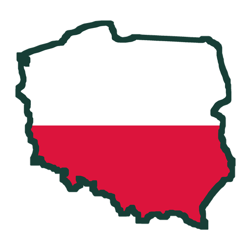

Narodowe Święto Niepodległości – 11 listopada11 listopada 2026 (środa) obchodzimy Narodowe Święto Niepodległości – 108. rocznicę odzyskania przez Polskę niepodległości.
Kiedy?
Święto przypada co roku 11 listopada. W tym roku wypada w środę. Jest to dzień ustawowo wolny od pracy.
Dlaczego właśnie 11 listopada?
Przez 123 lata, od III rozbioru w 1795 roku, Polski nie było na mapie Europy – jej ziemie podzieliły między siebie Rosja, Prusy i Austria. Mimo to Polacy nie przestali być narodem: zachowali język, kulturę i wiarę, a Kościół przez cały czas zaborów był dla nich ostoją polskości.
Jesienią 1918 roku, pod koniec I wojny światowej, państwa zaborcze były pokonane lub pogrążone w rewolucji. 10 listopada 1918 roku do Warszawy powrócił z więzienia w Magdeburgu Józef Piłsudski, a 11 listopada – w dniu podpisania rozejmu kończącego wojnę – Rada Regencyjna przekazała mu dowództwo nad wojskiem polskim. Ten dzień uznajemy za symboliczny początek odrodzonej Rzeczypospolitej.
Święto ustanowiono w 1937 roku. W czasach PRL było zakazane, a przywrócono je w 1989 roku.
Po co świętujemy?
To dzień wdzięczności – Panu Bogu za dar wolnej Ojczyzny oraz tym, którzy o nią walczyli i za nią oddali życie. To także okazja, by przypomnieć sobie, że wolności nie otrzymuje się raz na zawsze: trzeba o nią dbać przez uczciwą pracę, troskę o rodzinę, wspólnotę i dobro wspólne.
Jak przeżyć ten dzień?
- Uczestnicząc we Mszy Świętej w intencji Ojczyzny.
- Wywieszając flagę narodową na domu.
- Odwiedzając groby i miejsca pamięci żołnierzy i bohaterów.
- Opowiadając dzieciom i wnukom o historii Polski i naszej rodziny.
W naszej parafii
- Wtorek, 10 listopada, godz. 18:00 (Jaszkotle) – Msza Święta w intencji naszej Ojczyzny.
- Środa, 11 listopada, godz. 18:00 (Jaszkotle) – Msza Święta, a po niej o godz. 18:30 wypominki.
Szczegóły w intencjach mszalnych i ogłoszeniach parafialnych na ten tydzień.
„Bóg, który przez tak liczne wieki otaczał Polskę blaskiem potęgi i chwały… Przed Twe ołtarze zanosim błaganie: Ojczyznę wolną pobłogosław, Panie!”